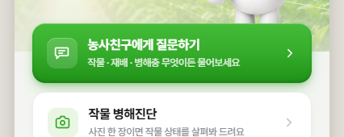
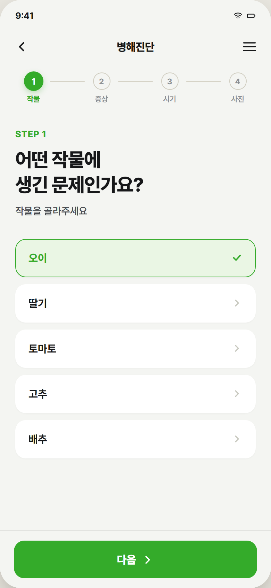
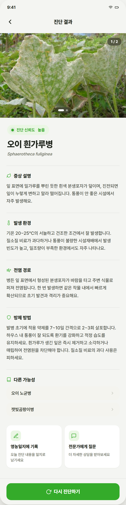
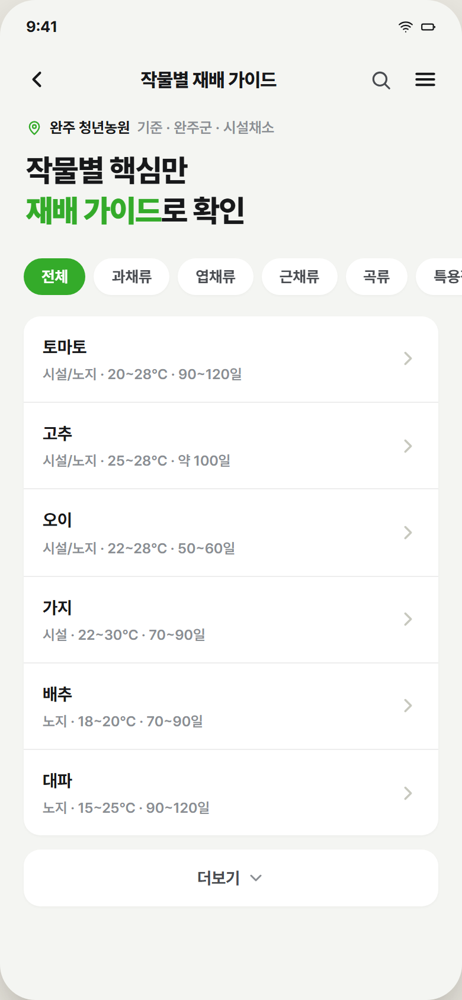
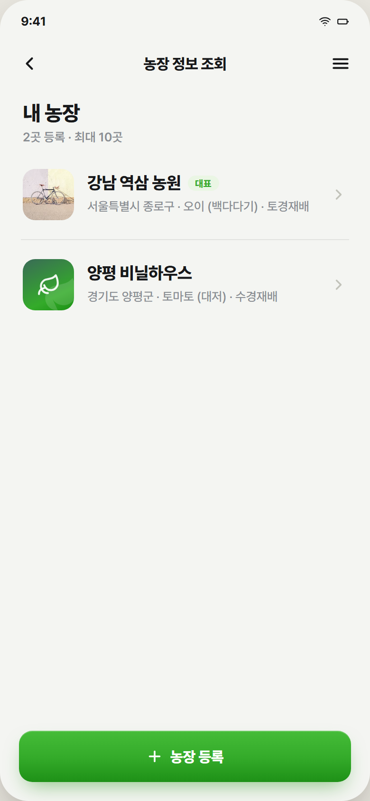
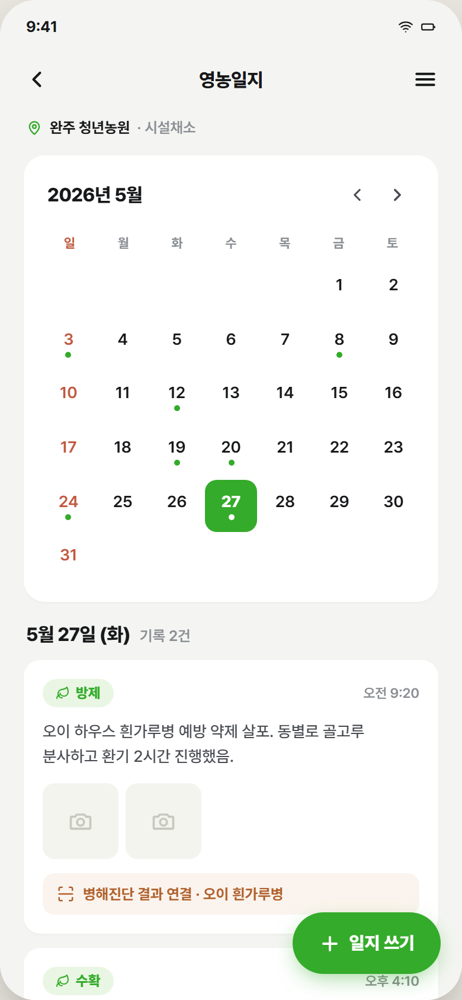
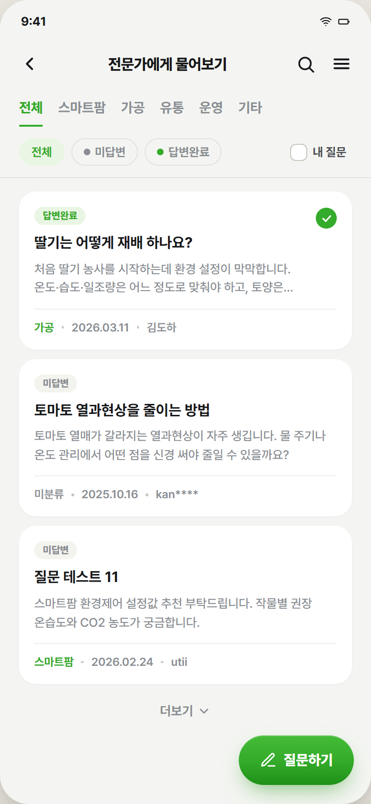
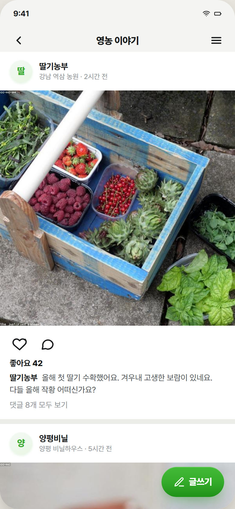

One app, ten reasons to open it.
Ask anything, anytime
Feel free to ask anything, anytime, anywhere. No jargon, no waiting — just a plain answer when a question comes up in the field.

Not a guess — a structured diagnosis
Confidence score, likely cause, and a treatment plan — not just a guess. Each result links back to the official pest database for backup.


Eight more features, one at a time.
Pest & disease library
Search any pest or crop, get the treatment in seconds. Browse by symptom to see what's going around this season.

Cultivation guides
Temperature, duration, and method — every crop, at a glance. Built from agronomic best practice, not guesswork.

Farm management
Every plot you farm, registered in one place. Switch between farms instantly to check weather, crops, and history.

Farming diary
Every spray and harvest, logged in seconds. Keep a clean record for certification, subsidies, or your own memory.

Ask a human expert
When AI isn't enough, a real specialist answers. Questions route to the right category and stay open until answered.

Farmer community
See what other farmers are dealing with this season. Share what's working on your own plot, or just read what others post.

Video lessons
Short expert videos, sorted by crop. Learn a technique in a few minutes, whenever it's convenient.

Support programs
Subsidies matched to your farm, with real deadlines. Never miss an application window again.

Let's grow this together.
We're looking for partners who want to bring AI to the people who feed everyone else.
hello@ksfarm.example